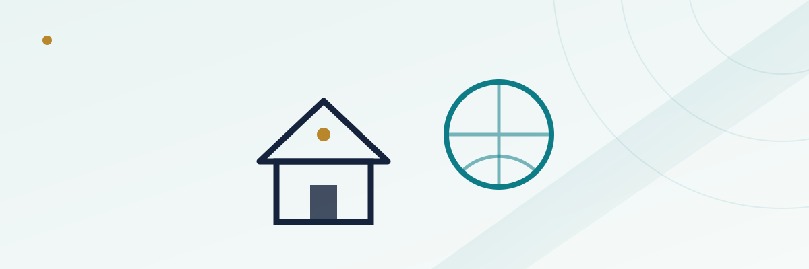

NBA Cup Knockout Rounds Are Back at Home Arenas: How That Changes the Betting Math

For three straight years, the NBA Cup's knockout rounds asked bettors to throw out one of the most reliable numbers in their model. Once the bracket was set, the semifinals and the championship both moved to a neutral arena in Las Vegas, which meant pricing those games without the home-court cushion that normally shapes an NBA spread. That changed for 2026-27. Under the format the league rolled out this fall, the quarterfinals and semifinals are both played at the home arena of the higher seed, and only the championship — now in Indianapolis instead of Las Vegas — stays neutral. It's a small schedule note with a real pricing consequence, and it flips a piece of conventional Cup-betting wisdom that was accurate as recently as last December.
In this guide
- What the old neutral-site knockout format actually did to the numbers
- What changed for 2026-27, round by round
- Why bringing home court back is a bigger deal than it sounds
- Seeding now carries real stakes beyond just getting to the bracket
- A worked example: the same quarterfinal matchup, old rules vs. new
- The championship is still neutral — just not in Las Vegas anymore
- Common mistakes bettors will carry over from the old format
What the old neutral-site knockout format actually did to the numbers
From the tournament's debut season through last year, the format funneled every knockout-round game — quarterfinals included, depending on the year's exact rules — toward a neutral site once the bracket narrowed, with the semifinals and final both staged at the same Las Vegas arena regardless of which teams advanced. For oddsmakers, that meant stripping out home-court value entirely for those games: no crowd noise working against the road team, no shooting backdrop either team already knew, no reduced-travel edge for whichever side happened to be geographically closer. Home-court advantage is one of the more stable, well-documented inputs in an NBA pricing model — worth something in the neighborhood of a couple of points in a typical matchup — and for one or two rounds a year, that input simply didn't exist. Models had to lean harder on raw team rating, health, and recent form to fill the gap it left behind.
What changed for 2026-27, round by round
The six group winners plus two conference wild cards reach the knockout bracket, same as before. From there, the format now works like this: the quarterfinals are played at the home arena of the higher seed in each conference — specifically, the two best group-stage records in each conference host, with the top overall seed hosting the wild-card team. The semifinals follow the same rule, again at the home arena of the higher remaining seed. Only the championship, held this season at Hinkle Fieldhouse in Indianapolis rather than a Las Vegas arena, is played at a genuinely neutral site. In other words, two of the three knockout rounds that used to be neutral-site games are now ordinary home games for one side, and the group-stage and quarterfinal/semifinal results all continue to count toward the regular-season record and player stats, exactly as they did under the old rules — only the championship sits outside the standings ledger.
| Round | Site under the old multi-year format | Site for 2026-27 |
|---|---|---|
| Quarterfinals | Higher seed's home arena (unchanged in most prior years) | Higher seed's home arena |
| Semifinals | Neutral arena in Las Vegas | Higher remaining seed's home arena |
| Championship | Neutral arena in Las Vegas | Neutral site — Hinkle Fieldhouse, Indianapolis |
Why bringing home court back is a bigger deal than it sounds
On the surface this reads like a minor venue swap, but it changes the actual mechanics of setting a line for roughly half the knockout bracket. A semifinal that would have been priced as a coin-flip-adjacent neutral game last December now gets a normal home-court bump layered back in for whichever team earned the higher seed. That's not a cosmetic difference — it's the reintroduction of a real, measurable number into the model for games that didn't have access to it a year ago.
Seeding now carries real stakes beyond just getting to the bracket
Because the knockout rounds no longer strip out home-court value, where a team finishes in its group stops being a binary "made it or didn't" question and starts carrying the same kind of seeding weight bettors already track in the playoffs. Winning a group outright — rather than sneaking in as a wild card — now guarantees hosting rights through two full knockout rounds instead of guaranteeing nothing beyond a single home quarterfinal. A team fighting to climb from the wild-card line to an outright group win in its final Cup Night game isn't just chasing bracket positioning anymore; it's chasing home-court access that will directly show up in the spread of its next two games if it keeps winning.
A worked example: the same quarterfinal matchup, old rules vs. new
Picture a quarterfinal where the host team rates out a couple of points better than its opponent on a neutral floor. Under the old format, winning that game sent the host to a Las Vegas semifinal where its home-court edge vanished entirely — the spread for that next game would have been built almost entirely off team strength and health, with no venue input at all. Under the current format, that same win instead sends the host to a semifinal at its own arena, where the model adds back a normal home-court bump on top of the team-strength gap. The two paths produce noticeably different semifinal lines for the identical quarterfinal outcome, which is exactly why carrying over an old assumption about "the Cup semifinal is basically neutral" into this season's numbers would be a mistake.
The championship is still neutral — just not in Las Vegas anymore
The one constant is the final itself: a true neutral-site game, with neither side getting a crowd, shooting backdrop, or travel edge. The venue shift to Hinkle Fieldhouse in Indianapolis doesn't change the pricing logic bettors used in prior years for that single game — it's still the one night of the Cup where oddsmakers lean almost entirely on team rating, health, and recent form because the location simply isn't doing any work for either side. If you only remember one holdover rule from the old format, this is the one to keep: the championship, and only the championship, still needs to be priced as a neutral game.
Common mistakes bettors will carry over from the old format
The biggest risk is inertia — treating this year's semifinal the way last year's semifinal actually played, when the venue rule underneath it has quietly changed. A bettor who remembers "the Cup semis are in Vegas, so there's no home edge" will misprice the game in the host's opponent's favor without realizing the rule shifted. The second mistake runs the other way: overweighting home court for a quarterfinal host that barely squeaked into the bracket as a wild card, when the actual seeding gap between the two teams might be thin enough that a standard home-court bump overstates the host's real edge. And because the championship remains the one true neutral game, treating it with the same home-court assumptions as the now-home-hosted semifinals is its own separate error. Track which specific round you're betting, not just whether it says "NBA Cup" on the schedule.
For more on how roster incentives shift NBA markets around the Cup's group stage, see our guide to the NBA Cup's group stage and wild-card math, or how a similarly compressed, winner-take-all format changes pricing in our piece on NBA playoff betting and 7-game series.
Frequently asked questions
Were the NBA Cup knockout rounds always played at a neutral site?
Not always, and not uniformly. For several seasons the semifinals and championship were both staged at a single Las Vegas arena regardless of matchups, while the quarterfinals were generally hosted by the higher seed. For 2026-27, only the championship remains a true neutral-site game.
Where is the NBA Cup championship played now that it's not in Las Vegas?
This season's championship is held at Hinkle Fieldhouse in Indianapolis. It's still a neutral site for both finalists, so the venue change doesn't alter how that single game should be priced.
Do the quarterfinals and semifinals still count toward a team's regular-season record?
Yes. Group-stage, quarterfinal, and semifinal games all count fully toward the regular-season record and season stats. Only the championship final sits outside the standings.
Does home-court advantage in an NBA Cup semifinal work the same way it does in a normal regular-season game?
It's treated the same way in the pricing model — travel, crowd, and building familiarity all apply normally now that the game is at an actual home arena rather than a neutral Las Vegas site.
Does winning a group outright matter more now than it used to?
Yes, in a concrete way. An outright group win now guarantees home-court access through two full knockout rounds instead of just a single home quarterfinal, which gives late group-stage games more riding on them than they carried under the old neutral-site setup.